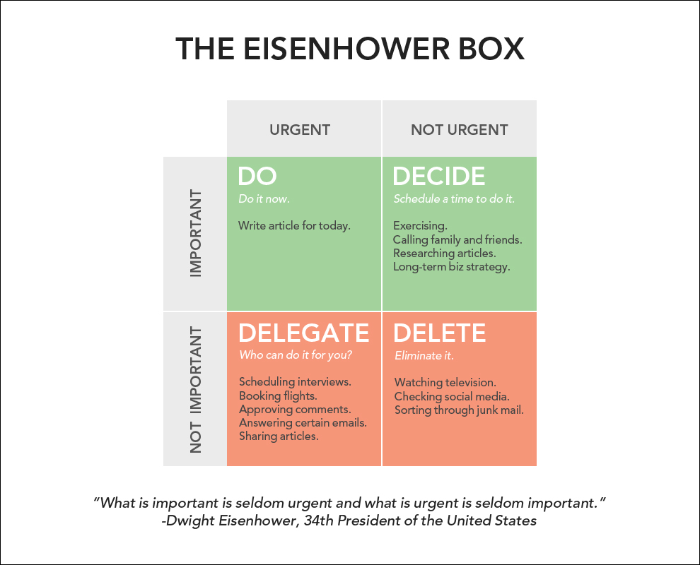

Article #1: The Eisenhower Box: How to be More Productive
Eisenhower’s strategy for taking action and organizing your tasks is simple. Using the decision matrix below,
you will separate your actions based on four possibilities.
- Urgent and important (tasks you will do immediately).
- Important, but not urgent (tasks you will schedule to do later).
- Urgent, but not important (tasks you will delegate to someone else).
- Neither urgent nor important (tasks that you will eliminate).
The great thing about this matrix is that it can be used for broad productivity plans (“How should I spend my
time each week?”) and for smaller, daily plans (“What should I do today?”).
Here is an example of what my Eisenhower Box looks like for today.

The Difference Between Urgent and Important
What is important is seldom urgent and what is urgent is seldom important.
-Dwight Eisenhower
Urgent tasks are things that you feel like you need to react to: emails, phone calls, texts, news stories.
Meanwhile, in the words of Brett McKay, “Important tasks are things that contribute to our long-term mission,
values, and goals.”
Separating these differences is simple enough to do once, but doing so continually can be tough. The reason I
like the Eisenhower Matrix is that it provides a clear framework for making the decisions over and over again.
And like anything in life, consistency is the hard part.
Here are some other observations I’ve made from using this method.
Elimination Before Optimization
A few years ago, I was reading about computer programming when I came across an interesting quote:
“There is no code faster than no code.”
–Kevlin Henney
In other words, the fastest way to get something done — whether it is having a computer read a line of code or
crossing a task off your to-do list — is to eliminate that task entirely. There is no faster way to do something
than not doing it at all. That’s not a reason to be lazy, but rather a suggestion to force yourself to make hard
decisions and delete any task that does not lead you toward your mission, your values, and your goals.
Too often, we use productivity, time management, and optimization as an excuse to avoid the really difficult
question: “Do I actually need to be doing this?” It is much easier to remain busy and tell yourself that you
just need to be a little more efficient or to “work a little later tonight” than to endure the pain of
eliminating a task that you are comfortable with doing, but that isn’t the highest and best use of your time.
As Tim Ferriss says, “Being busy is a form of laziness — lazy thinking and indiscriminate action.”
I find that the Eisenhower Matrix is particularly useful because it pushes me to question whether an action is
really necessary, which means I’m more likely to move tasks to the “Delete” quadrant rather than mindlessly
repeating them. And to be honest, if you simply eliminated all of the things you waste time on each day then you
probably wouldn't need any tips on how to be more productive at the things that matter.
Does This Help Me Accomplish My Goal?
Does This Help Me Accomplish My Goal?
Those two questions are…
- What am I working toward?
- What are the core values that drive my life?
These are questions that I have asked myself. Answering these questions has helped me clarify the categories
for certain tasks in my life. Deciding which tasks to do and which tasks to delete becomes much easier when you
are clear about what is important to you.
The Eisenhower Matrix isn’t a perfect strategy, but I have found it to be a useful decision-making tool for
increasing my productivity and eliminating the behaviors that take up mental energy, waste time, and rarely move
me toward my goals. I hope you’ll find it useful too.
Article #2: Warren Buffett’s “2 List” Strategy: How to Maximize Your Focus and Master Your Priorities
With well over 50 billion dollars to his name, Warren Buffett is consistently ranked among the wealthiest
people in the world. Out of all the investors in the 20th century, Buffett was the most successful.
Given his success, it stands to reason that Buffett has an excellent understanding of how to spend his time
each day. From a monetary perspective, you could say that he manages his time better than anyone else.
And that's why the story below, which was shared directly from Buffett's employee to my good friend Scott
Dinsmore, caught my attention.
Let's talk about the simple 3-step productivity strategy that Warren Buffett uses to help his employees
determine their priorities and actions.
The Story of Mike Flint
Mike Flint was Buffett's personal airplane pilot for 10 years. (Flint has also flown four US Presidents, so I
think we can safely say he is good at his job.) According to Flint, he was talking about his career priorities
with Buffett when his boss asked the pilot to go through a 3-step exercise.
Here's how it works…
STEP 1: Buffett started by asking Flint to write down his top 25 career goals. So, Flint took
some time and wrote them down. (Note: you could also complete this exercise with goals for a shorter timeline.
For example, write down the top 25 things you want to accomplish this week.)
STEP 2: Then, Buffett asked Flint to review his list and circle his top 5 goals. Again, Flint
took some time, made his way through the list, and eventually decided on his 5 most important goals.
Note: If you're following along at home, pause right now and do these first two steps before
moving on to Step 3.
STEP 3: At this point, Flint had two lists. The 5 items he had circled were List A and the 20
items he had not circled were List B.
Flint confirmed that he would start working on his top 5 goals right away. And that's when Buffett asked him
about the second list, “And what about the ones you didn't circle?”
Flint replied, “Well, the top 5 are my primary focus, but the other 20 come in a close second. They are still
important so I’ll work on those intermittently as I see fit. They are not as urgent, but I still plan to give
them a dedicated effort.”
To which Buffett replied, “No. You’ve got it wrong, Mike. Everything you didn’t circle just became your
Avoid-At-All-Cost list. No matter what, these things get no attention from you until you’ve succeeded with your
top 5.”
The Power of Elimination
I believe in minimalism and simplicity. I like getting rid of waste. I think that eliminating the inessential
is one of the best ways to make life easier, make good habits more automatic, and make you grateful for what you
do have.
That said, getting rid of wasteful items and decisions is relatively easy. It's eliminating things you care
about that is difficult. It is hard to prevent using your time on things that are easy to rationalize, but that
have little payoff. The tasks that have the greatest likelihood of derailing your progress are the ones you care
about, but that aren't truly important.
Every behavior has a cost. Even neutral behaviors aren’t really neutral. They take up time, energy, and space
that could be put toward better behaviors or more important tasks. We are often spinning in motion instead of
taking action.
This is why Buffett's strategy is particularly brilliant. Items 6 through 25 on your list are things you care
about. They are important to you. It is very easy to justify spending your time on them. But when you compare
them to your top 5 goals, these items are distractions. Spending time on secondary priorities is the reason you
have 20 half-finished projects instead of 5 completed ones.
Eliminate ruthlessly. Force yourself to focus. Complete a task or kill it.
The most dangerous distractions are the ones you love, but that don't love you back.
Article #3: The Ivy Lee Method: The Daily Routine Experts Recommend for Peak Productivity
By 1918, Charles M. Schwab was one of the richest men in the world.
Schwab was the president of the Bethlehem Steel Corporation, the largest shipbuilder and the second-largest
steel producer in America at the time. The famous inventor Thomas Edison once referred to Schwab as the “master
hustler.” He was constantly seeking an edge over the competition.
One day in 1918, in his quest to increase the efficiency of his team and discover better ways to get things
done, Schwab arranged a meeting with a highly-respected productivity consultant named Ivy Lee.
Lee was a successful businessman in his own right and is widely remembered as a pioneer in the field of public
relations. As the story goes, Schwab brought Lee into his office and said, “Show me a way to get more things
done.”
“Give me 15 minutes with each of your executives,” Lee replied.
“How much will it cost me,” Schwab asked.
“Nothing,” Lee said. “Unless it works. After three months, you can send me a check for whatever you feel it's
worth to you.”
The Ivy Lee Method
During his 15 minutes with each executive, Ivy Lee explained his simple daily routine for achieving peak
productivity:
- At the end of each work day, write down the six most important things you need to accomplish tomorrow. Do
not write down more than six tasks.
- Prioritize those six items in order of their true importance.
- When you arrive tomorrow, concentrate only on the first task. Work until the first task is finished before
moving on to the second task.
- Approach the rest of your list in the same fashion. At the end of the day, move any unfinished items to a
new list of six tasks for the following day.
- Repeat this process every working day.
The strategy sounded simple, but Schwab and his executive team at Bethlehem Steel gave it a try. After three
months, Schwab was so delighted with the progress his company had made that he called Lee into his office and
wrote him a check for $25,000.
A $25,000 check written in 1918 is the equivalent of a $400,000 check in 2015.
The Ivy Lee Method of prioritizing your to-do list seems stupidly simple. How could something this simple be
worth so much?
What makes it so effective?
Portrait of Ivy Ledbetter Lee from the early 1900s. (Photographer: Unknown)
On Managing Priorities Well
Ivy Lee's productivity method utilizes many of the concepts I have written about previously.
Here's what makes it so effective:
It's simple enough to actually work. The primary critique of methods like this one is that
they are too basic. They don't account for all of the complexities and nuances of life. What happens if an
emergency pops up? What about using the latest technology to our fullest advantage? In my experience, complexity
is often a weakness because it makes it harder to get back on track. Yes, emergencies and unexpected
distractions will arise. Ignore them as much as possible, deal with them when you must, and get back to your
prioritized to-do list as soon as possible. Use simple rules to guide complex behavior.
It forces you to make tough decisions. I don't believe there is anything magical about Lee's
number of six important tasks per day. It could just as easily be five tasks per day. However, I do think there
is something magical about imposing limits upon yourself. I find that the single best thing to do when you have
too many ideas (or when you're overwhelmed by everything you need to get done) is to prune your ideas and trim
away everything that isn't absolutely necessary. Constraints can make you better. Lee's method is similar to
Warren Buffett’s 25-5 Rule, which requires you to focus on just 5 critical tasks and ignore everything else.
Basically, if you commit to nothing, you'll be distracted by everything.
It removes the friction of starting. The biggest hurdle to finishing most tasks is starting
them. (Getting off the couch can be tough, but once you actually start running it is much easier to finish your
workout.) Lee's method forces you to decide on your first task the night before you go to work. This strategy
has been incredibly useful for me: as a writer, I can waste three or four hours debating what I should write
about on a given day. If I decide the night before, however, I can wake up and start writing immediately. It's
simple, but it works. In the beginning, getting started is just as important as succeeding at all.
It requires you to single-task. Modern society loves multi-tasking. The myth of multi-tasking
is that being busy is synonymous with being better. The exact opposite is true. Having fewer priorities leads to
better work. Study world-class experts in nearly any field—athletes, artists, scientists, teachers, CEOs—and
you'll discover one characteristic runs through all of them: focus. The reason is simple. You can't be great at
one task if you're constantly dividing your time ten different ways. Mastery requires focus and consistency.
The bottom line? Do the most important thing first each day. It's the only productivity trick you need.
If you want to learn more about the routines and habits of Olympic gold medalists, award-winning artists,
business leaders, life-saving physicians, and star comedians, check out my book Atomic Habits.
Article #4: The 15-Minute Routine Anthony Trollope Used to Write 40+ Books
Beginning with his first novel in 1847, Anthony Trollope wrote at an incredible pace. Over the next 38 years,
he published 47 novels, 18 works of non-fiction, 12 short stories, 2 plays, and an assortment of articles and
letters.
Trollope achieved his incredible productivity by writing in 15-minute intervals for three hours per day.
His strategy is explained in Mason Currey’s book, Daily Rituals (audiobook):
“It had at this time become my custom,—and is still my custom, though of late I have become a
little lenient of myself—to write with my watch before me, and to require of myself 250 words every quarter of
an hour…
This division of time allowed me to produce over ten pages of an ordinary novel volume a day,
and if kept up through ten months, would have given as its results three novels of three volumes each in the
year…”
—Anthony Trollope
Trollope’s approach may seem simple on the surface, but there is more going on here than it may appear at first
glance.
Let’s break down why this strategy allowed the author to be so productive and how we can use it in our own
lives.
Portrait of Anthony Trollope and his glorious beard. (Photographer: Napoleon Sarony)
If you want more practical ideas for breaking bad habits and creating good habits, check out my book Atomic Habits, which will show you how small
changes in habits can lead to remarkable results.
The Problem With Big Projects
When it comes to getting things done, I have experienced the best results when I rank my priorities based on
their true importance and do the most important thing first. Whenever possible, I believe this is the best
strategy because it forces you to direct your energy to the tasks of highest value.
There is one common problem with this approach:
After ranking your priorities for the day, if the number one task is a really big project then it can leave
you feeling frustrated because it takes a long time to finish.
For example, last week I was working on a project that took two days to complete. On Tuesday morning, when I
began the task, I knew I wouldn’t be able to finish it that day. Even though I knew I would work all day without
completing the task, I still found myself feeling frustrated by mid-afternoon. It was 4 p.m. and I had spent all
day working on the most important task, yet the only thing I had to show for my work was an unfinished project.
My to-do list was just as long as it was in the morning, even though I was spending my time in the correct way.
I was doing the right thing, but it can still be disheartening to be stuck on Task #1 when you've been working
all day. These feelings of frustration are a possible downside of the prioritized to-do list.
Anthony Trollope, however, developed a solution to this common problem.
Tiny Milestones, More Momentum
Anthony Trollope was in the business of writing books and writing a book is a big project. It is not the type
of task that you can complete in a day. In some cases, merely writing a chapter is too big a task for a single
day.
>However, instead of measuring his progress based on the completion of chapters or books, Trollope measured his
progress in 15-minute increments. This approach allowed him to enjoy feelings of satisfaction and accomplishment
very quickly while continuing to work on the large task of writing a book.
This is a big deal for two reasons:
- Small measures of progress help to maintain momentum over the long-run, which means you’re more likely to
finish large tasks.
- The faster you complete a productive task, the more quickly your day develops an attitude of productivity
and effectiveness.
I have found this second point, the speed with which you complete your first task of the day, to be of
particular importance for maintaining a high productive output day after day.
Speed to Completion
Anthony Trollope didn’t have to wait three months to feel a sense of accomplishment from completing his book
nor did he have to wait three days until he finished a chapter. Every fifteen minutes he could check his
progress. If he wrote 250 words, he could mentally check that time block off his list and feel a sense of
immediate accomplishment.
Trollope's 15-minute writing block was a well-designed progress meter that allowed Trollope to “get to
finished” faster while still working on a big task. He received the long-term value of working on the most
important things and the immediate payoff of finishing each little time block quickly.
You can employ a similar strategy for tasks besides writing, of course. For example, rather than measuring his
progress on a bigger task like monthly revenue, Trent Dyrsmid tracked each sales call he made with a paper clip.
The basic idea is to design a way to get rapid feedback while working on bigger projects. The faster we get
feedback that we are moving in the right direction, the more likely we are to continue moving that way.
Work for the long-term. Measure your progress for the short-term.
Article #5: How to Stay Focused When You Get Bored Working Toward Your Goals
This article is an excerpt from Atomic
Habits, James Clear's New York Times bestselling book.
We all have goals and dreams, but it can be difficult to stay focused and stick with them.
Each week, I hear from people who say things like, “I start with good intentions, but I can't seem to maintain
my consistency for a long period of time.”
Or, they will say, “I struggle with mental endurance. I get started but I can’t seem to follow through and stay
focused for very long.”
Don't worry. I'm just as guilty of this as anyone else.
For example, I'll start one project, work on it for a little bit, then lose focus and try something else. And
then I'll lose focus on my new goal and try something else. And on and on. When everything is said and done,
I’ve stopped and started so many times that I never really made much progress.
Maybe you have felt this way too.
This problem reminds me of a lesson I learned while working out one day…
The Myth of Passion and Motivation
On this particular day in the gym, there was a coach visiting who had worked with thousands of athletes over
his long career, including some nationally-ranked athletes and Olympians.
I introduced myself and we began talking about the process of improvement.
“What’s the difference between the best athletes and everyone else?” I asked. “What do the really successful
people do that most don’t?”
He mentioned the factors you might expect: genetics, luck, talent. But then he said something I wasn’t
expecting: “At some point it comes down to who can handle the boredom of training every day, doing the same
lifts over and over and over.”
His answer surprised me because it’s a different way of thinking about work ethic. People talk about getting
“amped up” to work on their goals. Whether it’s business or sports or art, you hear people say things like, “It
all comes down to passion.” Or, “You have to really want it.” As a result, many of us get depressed when we lose
focus or motivation because we think that successful people have some bottomless reserve of passion. But this
coach was saying that really successful people feel the same lack of motivation as everyone else. The difference
is that they still find a way to show up despite the feelings of boredom.
According to him, it’s this ability to do the work when it’s not easy that separates the top performers from
everyone else. That's the difference between professionals and amateurs.
Working When Work Isn’t Easy
Anyone can work hard when they feel motivated.
When I was an athlete, I loved going to practice the week after a big win. Who wouldn’t? Your coach is happy,
your teammates are pumped up, and you feel like you can beat anyone. As an entrepreneur, I love working when
customers are rolling in and things are going well. Getting results has a way of propelling you forward.
But what about when you’re bored? What about when the work isn’t easy? What about when it feels like nobody is
paying attention or you’re not getting the results you want?
Are you willing to work through 10 years of silence?
It's the ability to work when work isn't easy that makes the difference.
It’s Not the Event, It’s the Process
All too often, we think our goals are all about the result. We see success as an event that can be achieved and
completed.
Here are some common examples…
- Many people see health as an event: “If I just lose 20 pounds, then I’ll be in shape.”
- Many people see entrepreneurship as an event: “If we could get our business featured in the New York
Times, then we’d be set.”
- Many people see art as an event: “If I could just get my work featured in a bigger gallery, then I’d
have the credibility I need.”
Those are just a few of the many ways that we categorize success as a single event.
But if you look at the people who are consistently achieving their goals, you start to realize that it’s not
the events or the results that make them different. It’s their commitment to the process. They fall in love with
the daily practice, not the individual event.
hat's funny, of course, is that this focus on the process is what will allow you to enjoy the results anyway…
If you want to be a great writer, then having a best-selling book is wonderful. But the only
way to reach that result is to fall in love with the process of writing.
If you want the world to know about your business, then it would be great to be featured in
Forbes magazine. But the only way to reach that result is to fall in love with the process of marketing.
If you want to be in the best shape of your life, then losing 20 pounds might be necessary.
But the only way to reach that result is to fall in love with the process of eating healthy and exercising
consistently.
If you want to become significantly better at anything, you have to fall in love with the
process of doing it. You have to fall in love with building the identity of someone who does the work, rather
than merely dreaming about the results that you want.
In other words…
Fall in love with boredom. Fall in love with repetition and practice. Fall in love with the process of what you
do and let the results take care of themselves.
This article is an excerpt from Chapter 19 of James Clear's New York Times bestselling book Atomic Habits.
Read more here.
Article #6: The Mistake Smart People Make: Being In Motion vs. Taking Action
This article is an excerpt from Atomic
Habits, James Clear's New York Times bestselling book.
There is a common mistake that often happens to smart people — in many cases, without you ever realizing it.
The mistake has to do with the difference between being in motion and taking action. They sound similar, but
they’re not the same.
Here’s the deal…
Motion vs. Action
Motion vs. Action
When you’re in motion, you’re planning and strategizing and learning. Those are all good things, but they don’t
produce a result. Action, on the other hand, is the type of behavior that will deliver an outcome.
Here are some examples…
- If I outline 20 ideas for articles I want to write, that’s motion. If I actually write and publish an
article, that’s action.
- If I email 10 new leads for my business and start conversations with them, that’s motion. If they actually
buy something and turn into a customer, that’s action.
- If I search for a better diet plan and read a few books on the topic, that’s motion. If I actually eat a
healthy meal, that’s action.
- If I go to the gym and ask about getting a personal trainer, that’s motion. If I actually step under the bar
and start squatting, that’s action.
- If I study for a test or prepare for a research project, that’s motion. If I actually take the test or write
my research paper, that’s action.
Sometimes motion is useful, but it will never produce an outcome by itself. It doesn’t matter how many times
you go talk to the personal trainer, that motion will never get you in shape. Only the action of working out
will get the result you’re looking to achieve.
Why Smart People Find Themselves in Motion
If motion doesn’t lead to results, why do we do it? Sometimes we do it because we actually need to plan or
learn more. But more often than not, we do it because motion allows us to feel like we're making progress
without running the risk of failure. Most of us are experts at avoiding criticism. It doesn’t feel good to fail
or to be judged publicly, so we tend to avoid situations where that might happen. And that's the biggest reason
why you slip into motion rather than taking action: you want to delay failure.
Yes, I'd like to get in shape. But, I don’t want to look stupid in the gym, so I’ll just talk
to the trainer about their rates instead.
Yes, I'd like to land more clients for my business. But, if I ask for the sale, I might get
turned down. So maybe I should just email 10 potential clients instead.
Yes, I'd like to lose weight. But, I don't want to be the weird one who eats healthy at lunch.
So maybe I should just plan some healthy meals when I get home instead.
It's easy to be in motion and convince yourself that you're still making progress. You think, “I’ve got
conversations going with four potential clients right now. This is good. We’re moving in the right direction.”
Or, “I brainstormed some ideas for that book I want to write. This is coming together.”
Motion makes you feel like you’re getting things done. But really, you’re just preparing to get something done.
When preparation becomes a form of procrastination, you need to change something. You don’t want to merely be
planning. You want to be practicing.
Ideas for Taking Action
I’m sure there are many strategies for taking action, but I can think of two that have worked for me.
1. Set a schedule for your actions.
Every Monday and every Thursday, I write a new article and publish it to the world. It’s just what happens on
those days. It’s my schedule. I love Mondays and Thursdays because I know that I will always produce something
on those days. I'll get a result. That’s a good feeling.
For weightlifting, I train on Monday, Wednesday, and Friday. That’s the schedule every week. I’m not planning
workout exercises. I’m not researching workout programs. I’m simply working out. Action, not motion.
For on–going goals and lifestyle changes, I think this is the best approach. Set a schedule for your actions
and stick to it.
2. Pick a date to shift you from motion to action.
For some goals, setting a daily or weekly schedule doesn’t work as well.
This is the case if you’re doing something that is only going to happen once: like releasing your new book, or
launching a new product, or taking a big exam, or submitting a major project.
These things require some planning up front (motion). They also require plenty of action to complete them. For
example, you could set a schedule each week to write each chapter of your book. But for the book launch itself,
you could spend weeks or months planning different venues, locations, and so on.
In a situation like this, I find that it’s best to simply pick a date. Put something on the calendar. Make it
public. This is when X is happening.
For big projects or one–time goals, I think this is the best approach. Force yourself out of motion and into
action by setting a hard deadline.
Choose Action
"Never mistake activity for achievement." —John Wooden
Motion will never produce a final result. Action will.
When you’re in motion, you’re planning and strategizing and learning. Those are all good things, but they don’t
produce a result.
Are you doing something? Or are you just preparing to do it?
Are you in motion? Or are you taking action?
This article is an excerpt from Chapter 11 of James Clear's New York Times bestselling book Atomic Habits.
Read more here.